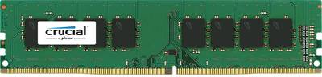

De voordelen van DDR4 bevinden zich vooral op het gebied van bitdensiteit, energiezuinigheid en hogere transfersnelheden. De prefetch buffer is, ten opzichte van DDR3 ongewijzigd gebleven op 8.
DDR3 geheugen had een maximum bitdensiteit van 16 GB per Dual Inline Memory Module. DDR4 doet dit maal vier tot een bitdensiteit van maar liefst 64 GB per DIMM.

Door te werken op een lagere spanning is DDR4 ook energiezuiniger. Er wordt gewerkt op 1,2 V ten opzichte van de 1,5 V DDR3. Er zijn ook plannen voor een low power versie van DDR4 die op 1,05 V werkt.
Door de kloksnelheid te verhogen kan er meer data per seconde uitgewisseld worden met de processor. DDR4 begint waar DDR3 ophoudt: de bus loopt van 1066 MHz tot 1600 MHz. Omdat er per klokperiode twee keer overgedragen wordt, staat dat op de verpakking als 2133 tot 3200 MT/s.